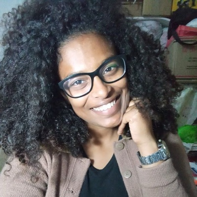

- Home
- >
- Currículo
Currículo
Dados Pessoais

Nome:
Poliana Cruz Costa
Data de Nascimento:
05/09/1997
Residência:
Maria da Fé-MG, Brasil
Idiomas:
Português (Nativo)
Espanhol (intermediário)
Inglês (básico)
Sobre Mim
Desde cedo, sempre fui curiosa sobre como as coisas funcionam, o que naturalmente me levou ao mundo da tecnologia. Minha trajetória profissional começou com cursos técnicos em Manutenção e Suporte em Informática e em Redes de Computadores, onde adquiri habilidades fundamentais que moldaram minha base na área de TI. Mais tarde, decidi aprofundar meus conhecimentos e iniciei a graduação em Engenharia de Computação na Universidade Federal de Itajubá (UNIFEI), onde venho desenvolvendo competências sólidas em programação, eletrônica e sistemas embarcados.
Ao longo do caminho, tive a oportunidade de atuar em diferentes áreas, desde o setor agropecuário até a prestação de serviços como motorista, o que me ajudou a desenvolver resiliência, disciplina e empatia — qualidades que levo comigo para qualquer desafio profissional. Uma das minhas maiores conquistas foi conseguir conciliar trabalho, estudo e limitações pessoais, provando a mim mesma que sou capaz de ir além do que esperava.
Atualmente, tenho me dedicado a projetos acadêmicos e pessoais que envolvem programação, eletrônica digital e design de interfaces. Tenho especial interesse por automação e pelo desenvolvimento de soluções tecnológicas que possam melhorar a vida das pessoas.
No meu tempo livre, gosto de explorar novas tecnologias, assistir documentários, organizar planilhas (sou apaixonada por Excel!) e aprender coisas novas. Também aprecio momentos de tranquilidade no interior, onde posso me reconectar com a natureza e recarregar as energias.
Educação
2023 - Em andamento
Bacharelado em Engenharia de Computação – Universidade Federal de Itajubá (UNIFEI)
2013 - 2014
Técnico em Redes de Computadores – Instituto Técnico de Barueri
2012 - 2014
Técnico em Manutenção e Suporte em Informática – Instituto Técnico de Barueri
Habilidades
Programação e Desenvolvimento
HTML / CSS / Java / C / Verilog / Git / C++ / SQL / Python
Hardware e Eletrônica
Manutenção de PCs / Sistemas embarcados / Redes / Eletrônica básica
Software e Produtividade
Microsoft Excel Avançado / Pacote Office / Visual Studio Code
Outras Competências
Organização / Trabalho em equipe / Noções de elétrica e hidráulica
Experiência de Trabalho
08/2022 - 03/2023
Trabalhadora Agropecuária em Geral – Real Mudas – Maria da Fé/MG
Autônomo
Motorista Particular – Maria da Fé/MG
Autônomo
Apoio em Construção Civil – Atividades como ajudante de pedreiro, azulejista e pintor
Contato
poccos@unifei.edu.br
(35) 99226-0037
Voltar ao início